Rift of Reason: art preview
Generated by tools/build-assets.mjs. Reload after each run.
Not in tools/assets/sheets.json (ignored): 3-cast/algorithm-v2.png
Still waiting for: arena.png, board-token.png
1-avatars/fox-sheet.png islands
2 speck(s) ignored
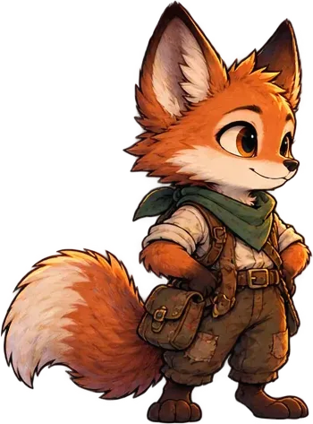
avatar/fox-boy/idle350×473avatar/fox-boy/neutral181×240avatar/fox-boy/happy187×240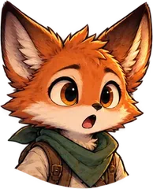
avatar/fox-boy/surprised194×240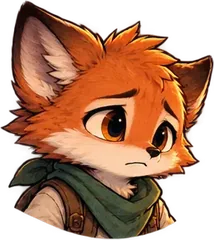
avatar/fox-boy/worried214×240avatar/fox-girl/idle374×485avatar/fox-girl/neutral182×240avatar/fox-girl/happy193×240avatar/fox-girl/surprised189×240avatar/fox-girl/worried202×240Source sheet with the 10 figures found
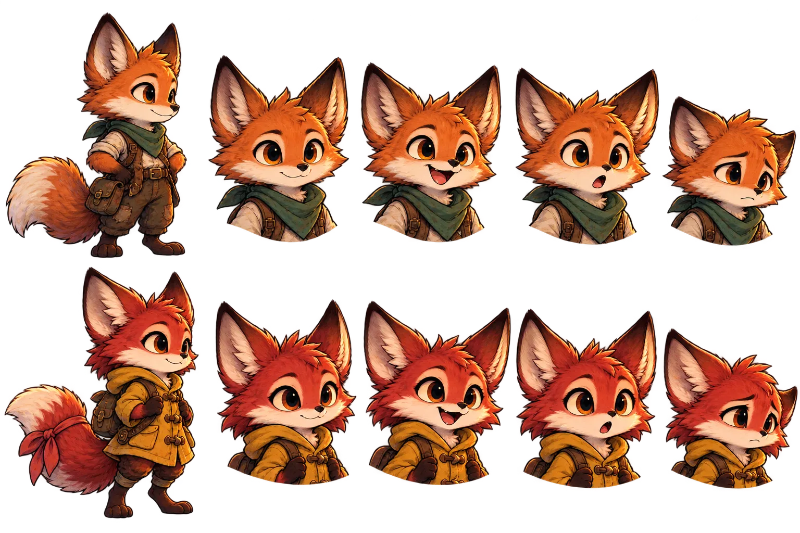
1 avatar/fox-boy/idle
2 avatar/fox-boy/neutral
3 avatar/fox-boy/happy
4 avatar/fox-boy/surprised
5 avatar/fox-boy/worried
6 avatar/fox-girl/idle
7 avatar/fox-girl/neutral
8 avatar/fox-girl/happy
9 avatar/fox-girl/surprised
10 avatar/fox-girl/worried
1-avatars/fox-walk.png walk
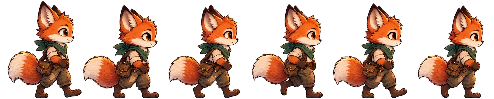
avatar/fox-boy/walk6 × 314×381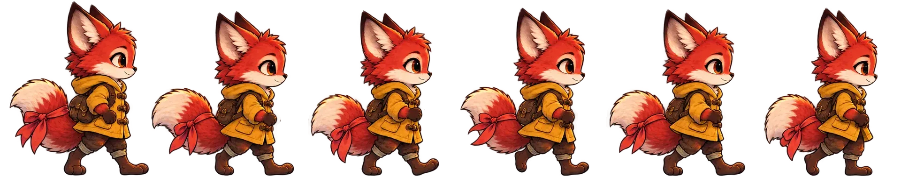
avatar/fox-girl/walk6 × 320×379Source sheet with the 12 figures found
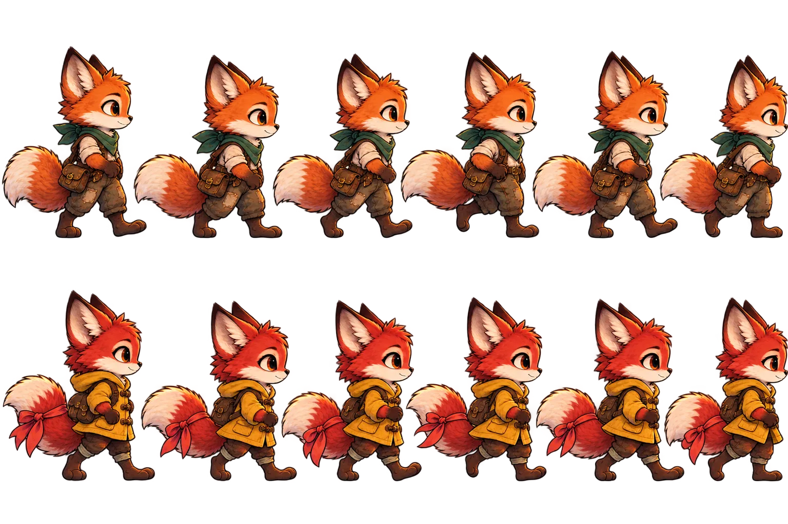
1 fox-boy 1
2 fox-boy 2
3 fox-boy 3
4 fox-boy 4
5 fox-boy 5
6 fox-boy 6
7 fox-girl 1
8 fox-girl 2
9 fox-girl 3
10 fox-girl 4
11 fox-girl 5
12 fox-girl 6
1-avatars/frogling-sheet.png islands
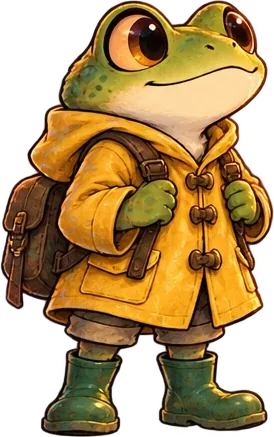
avatar/frogling-boy/idle274×437avatar/frogling-boy/neutral240×240avatar/frogling-boy/happy230×240avatar/frogling-boy/surprised227×240avatar/frogling-boy/worried245×240avatar/frogling-girl/idle313×456avatar/frogling-girl/neutral229×240avatar/frogling-girl/happy221×240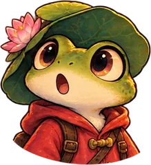
avatar/frogling-girl/surprised219×240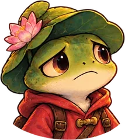
avatar/frogling-girl/worried214×240Source sheet with the 10 figures found
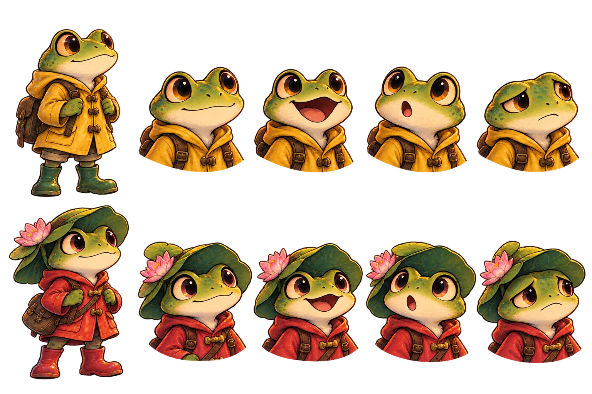
1 avatar/frogling-boy/idle
2 avatar/frogling-boy/neutral
3 avatar/frogling-boy/happy
4 avatar/frogling-boy/surprised
5 avatar/frogling-boy/worried
6 avatar/frogling-girl/idle
7 avatar/frogling-girl/neutral
8 avatar/frogling-girl/happy
9 avatar/frogling-girl/surprised
10 avatar/frogling-girl/worried
1-avatars/frogling-walk.png walk
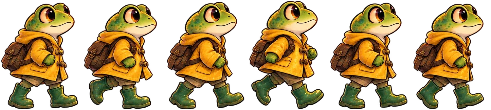
avatar/frogling-boy/walk6 × 241×325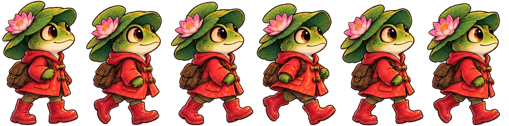
avatar/frogling-girl/walk6 × 249×371Source sheet with the 12 figures found
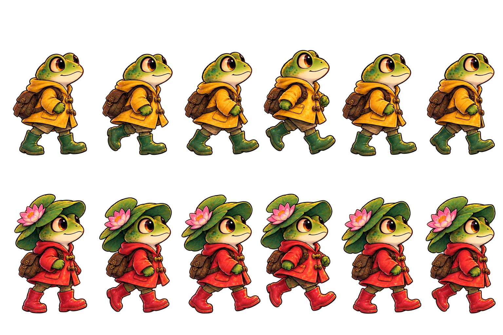
1 frogling-boy 1
2 frogling-boy 2
3 frogling-boy 3
4 frogling-boy 4
5 frogling-boy 5
6 frogling-boy 6
7 frogling-girl 1
8 frogling-girl 2
9 frogling-girl 3
10 frogling-girl 4
11 frogling-girl 5
12 frogling-girl 6
1-avatars/mothkin-sheet.png islands
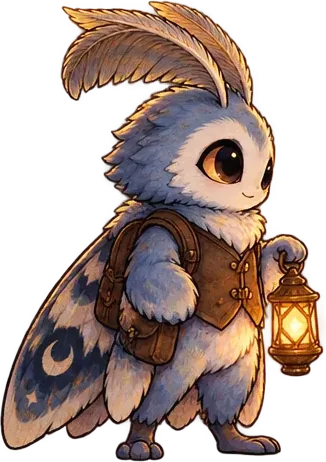
avatar/mothkin-boy/idle326×462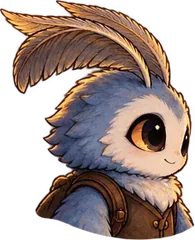
avatar/mothkin-boy/neutral195×240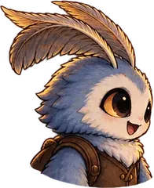
avatar/mothkin-boy/happy196×240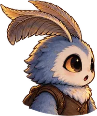
avatar/mothkin-boy/surprised201×240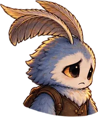
avatar/mothkin-boy/worried202×240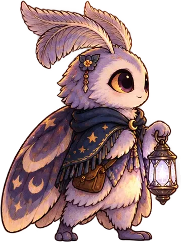
avatar/mothkin-girl/idle358×478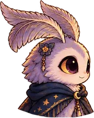
avatar/mothkin-girl/neutral191×240avatar/mothkin-girl/happy187×240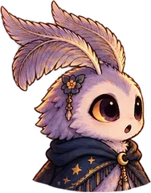
avatar/mothkin-girl/surprised188×240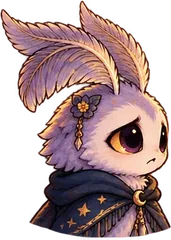
avatar/mothkin-girl/worried171×240Source sheet with the 10 figures found
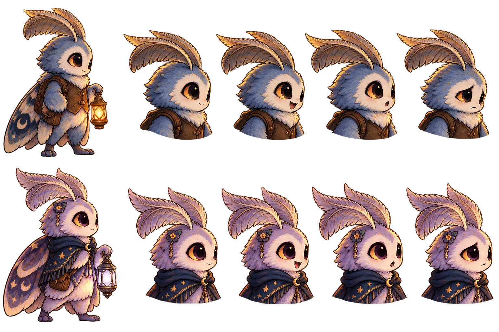
1 avatar/mothkin-boy/idle
2 avatar/mothkin-boy/neutral
3 avatar/mothkin-boy/happy
4 avatar/mothkin-boy/surprised
5 avatar/mothkin-boy/worried
6 avatar/mothkin-girl/idle
7 avatar/mothkin-girl/neutral
8 avatar/mothkin-girl/happy
9 avatar/mothkin-girl/surprised
10 avatar/mothkin-girl/worried
1-avatars/mothkin-walk.png walk
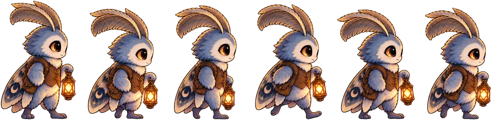
avatar/mothkin-boy/walk6 × 289×421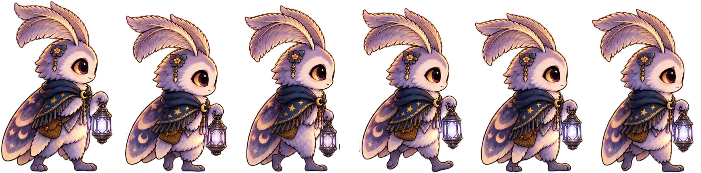
avatar/mothkin-girl/walk6 × 292×433Source sheet with the 12 figures found
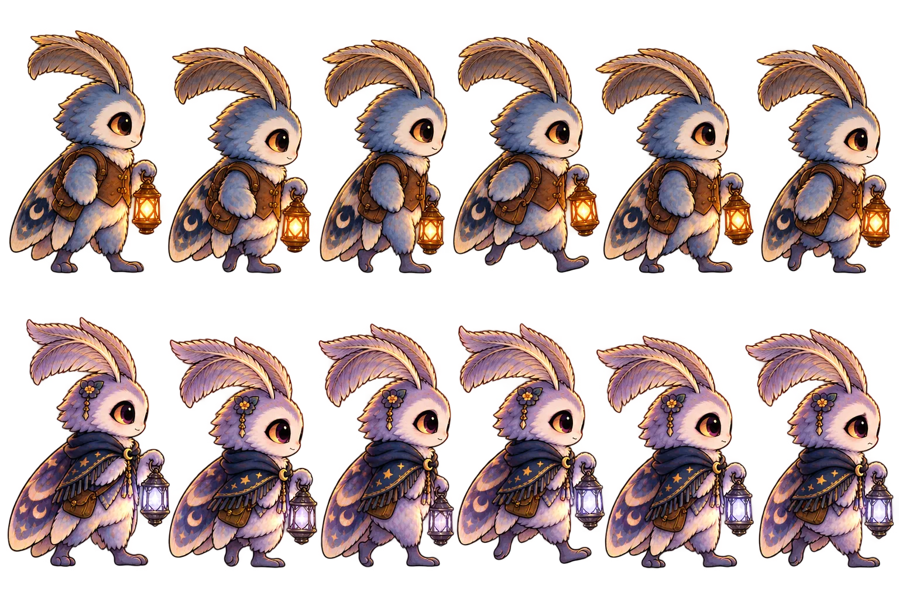
1 mothkin-boy 1
2 mothkin-boy 2
3 mothkin-boy 3
4 mothkin-boy 4
5 mothkin-boy 5
6 mothkin-boy 6
7 mothkin-girl 1
8 mothkin-girl 2
9 mothkin-girl 3
10 mothkin-girl 4
11 mothkin-girl 5
12 mothkin-girl 6
1-avatars/owlet-sheet.png islands
5 small blob(s) (sparkles) merged into nearby figures
2 speck(s) ignored
avatar/owlet-boy/idle366×414avatar/owlet-boy/neutral207×240avatar/owlet-boy/happy194×240avatar/owlet-boy/surprised201×240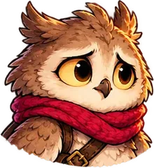
avatar/owlet-boy/worried220×240avatar/owlet-girl/idle366×429avatar/owlet-girl/neutral228×240avatar/owlet-girl/happy232×240avatar/owlet-girl/surprised228×240avatar/owlet-girl/worried245×240 Source sheet with the 10 figures found
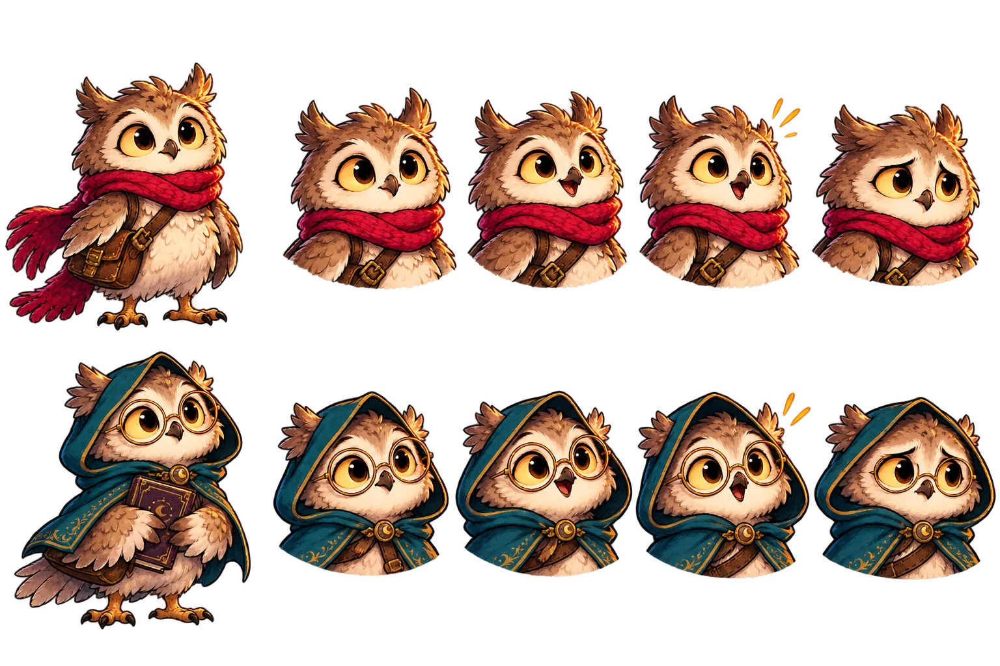
1 avatar/owlet-boy/idle
2 avatar/owlet-boy/neutral
3 avatar/owlet-boy/happy
4 avatar/owlet-boy/surprised
5 avatar/owlet-boy/worried
6 avatar/owlet-girl/idle
7 avatar/owlet-girl/neutral
8 avatar/owlet-girl/happy
9 avatar/owlet-girl/surprised
10 avatar/owlet-girl/worried
1-avatars/owlet-walk.png walk
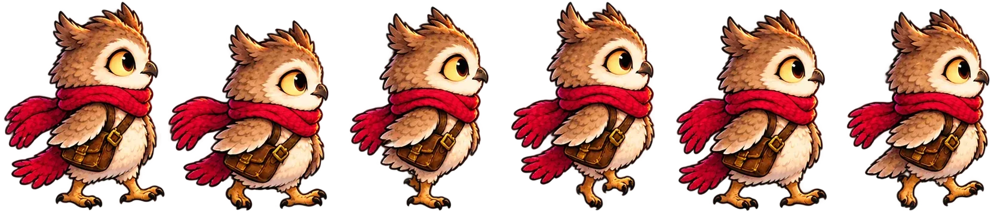
avatar/owlet-boy/walk6 × 279×355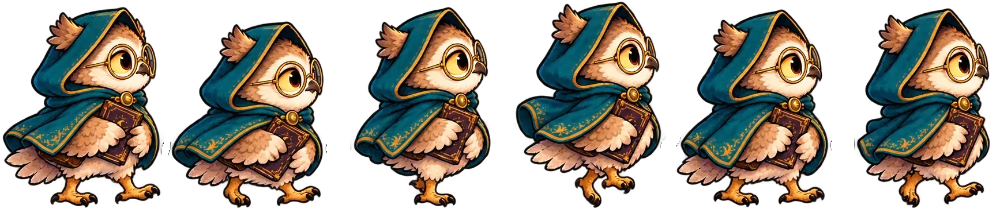
avatar/owlet-girl/walk6 × 289×364Source sheet with the 12 figures found
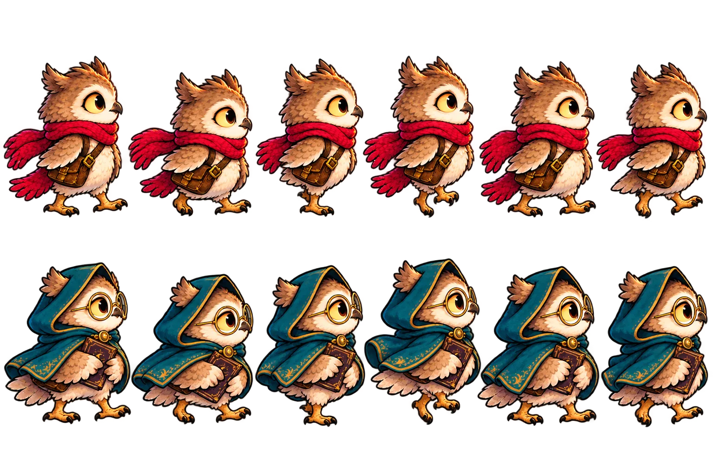
1 owlet-boy 1
2 owlet-boy 2
3 owlet-boy 3
4 owlet-boy 4
5 owlet-boy 5
6 owlet-boy 6
7 owlet-girl 1
8 owlet-girl 2
9 owlet-girl 3
10 owlet-girl 4
11 owlet-girl 5
12 owlet-girl 6
1-avatars/raven-sheet.png islands
4 small blob(s) (sparkles) merged into nearby figures
17 speck(s) ignored
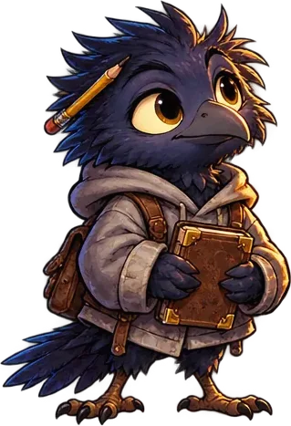
avatar/raven-boy/idle319×467avatar/raven-boy/neutral199×240avatar/raven-boy/happy194×240avatar/raven-boy/surprised211×240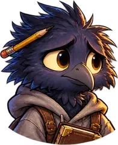
avatar/raven-boy/worried196×240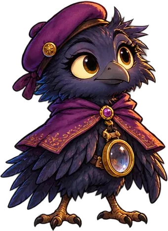
avatar/raven-girl/idle340×466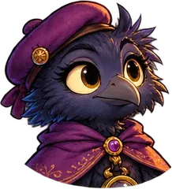
avatar/raven-girl/neutral218×240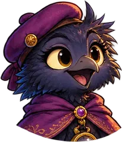
avatar/raven-girl/happy206×240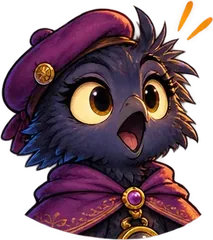
avatar/raven-girl/surprised213×240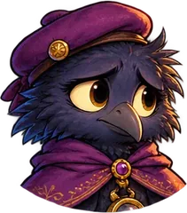
avatar/raven-girl/worried211×240Source sheet with the 10 figures found
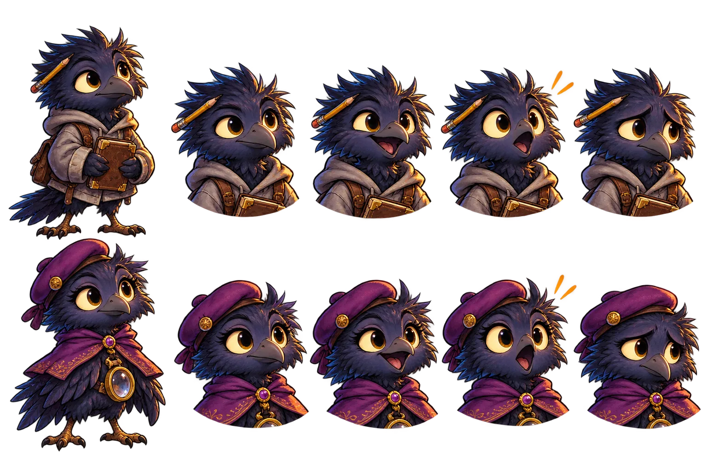
1 avatar/raven-boy/idle
2 avatar/raven-boy/neutral
3 avatar/raven-boy/happy
4 avatar/raven-boy/surprised
5 avatar/raven-boy/worried
6 avatar/raven-girl/idle
7 avatar/raven-girl/neutral
8 avatar/raven-girl/happy
9 avatar/raven-girl/surprised
10 avatar/raven-girl/worried
1-avatars/raven-walk.png walk
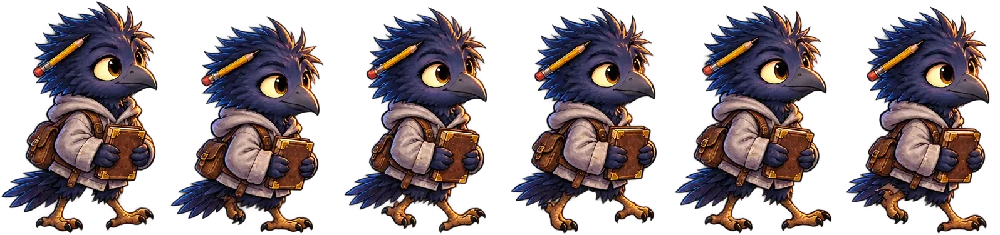
avatar/raven-boy/walk6 × 266×376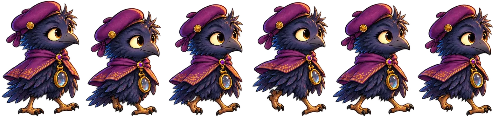
avatar/raven-girl/walk6 × 261×369Source sheet with the 12 figures found
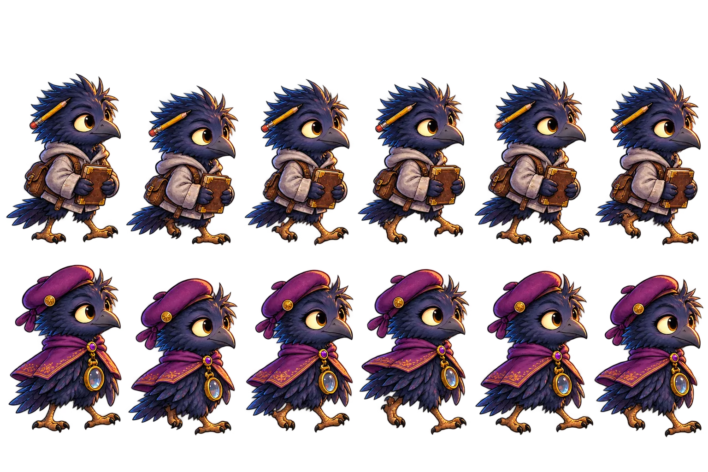
1 raven-boy 1
2 raven-boy 2
3 raven-boy 3
4 raven-boy 4
5 raven-boy 5
6 raven-boy 6
7 raven-girl 1
8 raven-girl 2
9 raven-girl 3
10 raven-girl 4
11 raven-girl 5
12 raven-girl 6
2-world/arena-l1.png scene
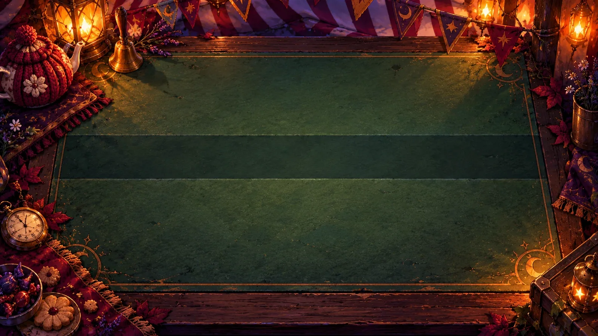
scene/arena-l11600×900 + small2-world/arena-l2.png scene
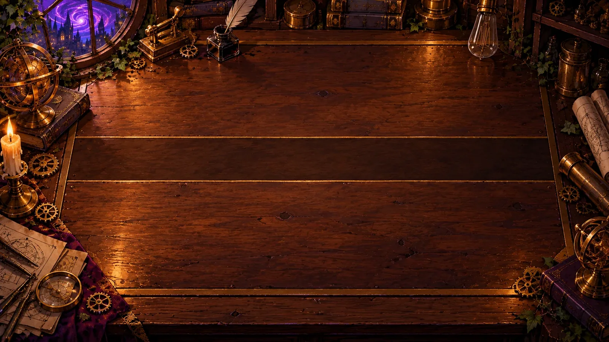
scene/arena-l21600×900 + small2-world/arena-l3.png scene
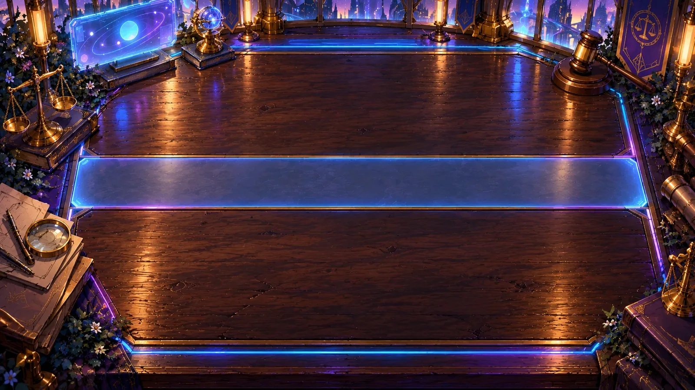
scene/arena-l31600×900 + small2-world/arena-l4.png scene
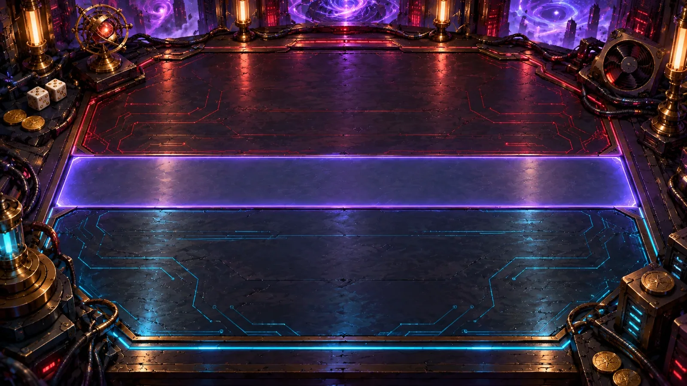
scene/arena-l41600×900 + small2-world/battle-table.png scene
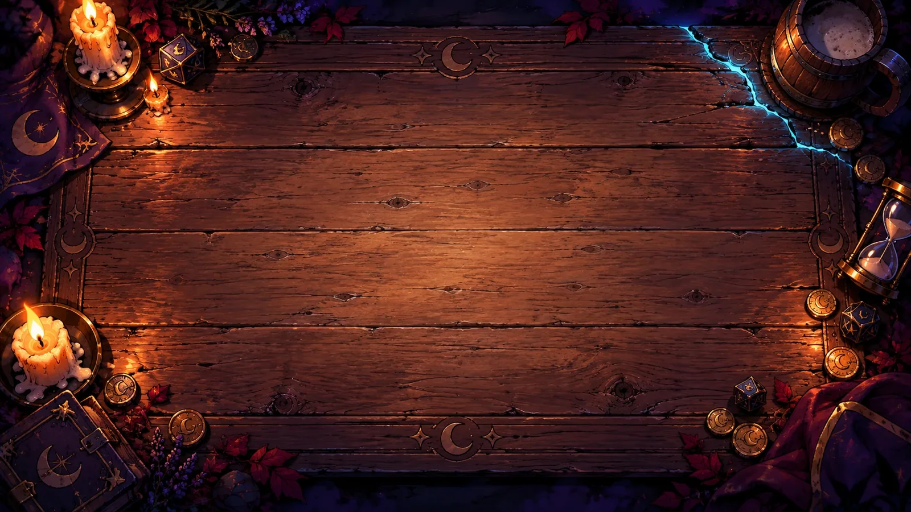
scene/battle-table1600×900 + small2-world/burrow.png scene
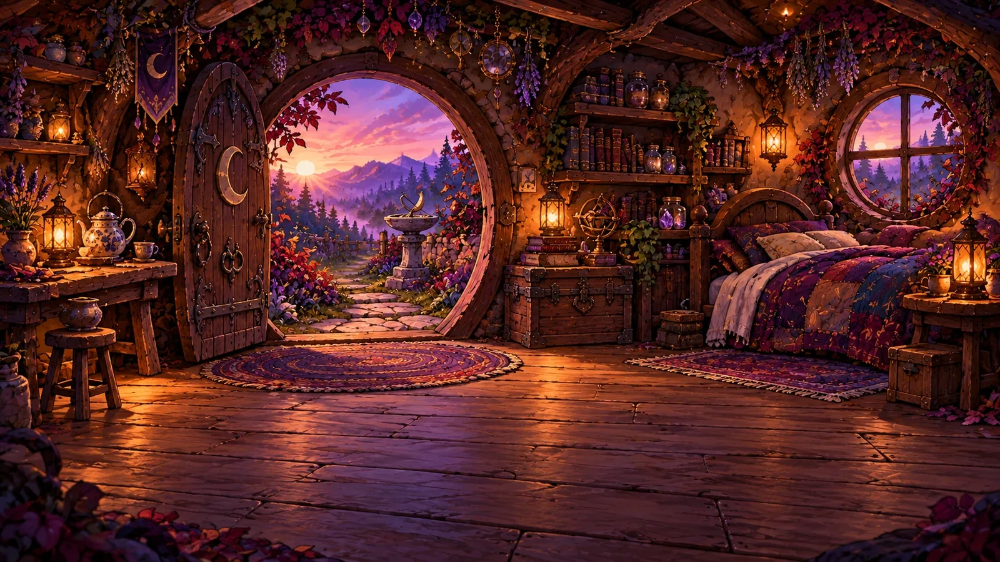
scene/burrow1600×900 + small2-world/fair.png scene
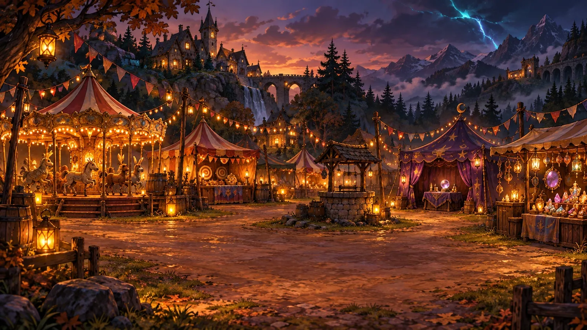
scene/fair1600×900 + small2-world/feast-hall.png scene
scene/feast-hall1600×900 + small
2-world/granny-door.png scene
scene/granny-door1600×900 + small
2-world/logo.png single
ui/logo1200×493
2-world/map.png scene
scene/map1672×941 + small
2-world/rift-fx.png islands
113 small blob(s) (sparkles) merged into nearby figures
47 speck(s) ignored
fx/rift-1119×262fx/rift-2207×340fx/rift-3388×394fx/rift-4366×410fx/rift-5449×476fx/rift-6559×520
Source sheet with the 6 figures found
1 fx/rift-1
2 fx/rift-2
3 fx/rift-3
4 fx/rift-4
5 fx/rift-5
6 fx/rift-6
2-world/rift-pass.png scene
scene/rift-pass1600×900 + small
2-world/road-bridge.png scene
scene/road-bridge1600×900 + small
2-world/road-forest.png scene
scene/road-forest1600×900 + small
2-world/road-gate.png scene
scene/road-gate1600×900 + small
2-world/shop.png scene
scene/shop1600×900 + small
2-world/stall-gallery.png scene
scene/stall-gallery1600×900 + small
2-world/stall-pattern.png scene
scene/stall-pattern1600×900 + small
2-world/stall-witness.png scene
scene/stall-witness1600×900 + small
2-world/title.png scene
scene/title1600×900 + small
3-cast/achilles.png islands
28 speck(s) ignored
npc/achilles/idle263×620npc/achilles/neutral127×240npc/achilles127×240npc/achilles/happy150×240npc/achilles/surprised99×240npc/achilles/angry164×240npc/achilles/worried190×240
Source sheet with the 6 figures found
1 npc/achilles/idle
2 npc/achilles/neutral
3 npc/achilles/happy
4 npc/achilles/surprised
5 npc/achilles/angry
6 npc/achilles/worried
3-cast/algorithm-core.png single
npc/algorithm/core679×620
3-cast/algorithm.png islands
1 small blob(s) (sparkles) merged into nearby figures
4 speck(s) ignored
npc/algorithm/sky-eye765×620npc/algorithm/speaking468×620npc/algorithm468×620
Source sheet with the 2 figures found
1 npc/algorithm/sky-eye
2 npc/algorithm/speaking
3-cast/copy.png single
npc/copy194×240
3-cast/corvina.png islands
3 speck(s) ignored
npc/corvina/idle483×620npc/corvina/neutral185×240npc/corvina185×240npc/corvina/happy186×240npc/corvina/surprised185×240npc/corvina/angry188×240
Source sheet with the 5 figures found
1 npc/corvina/idle
2 npc/corvina/neutral
3 npc/corvina/happy
4 npc/corvina/surprised
5 npc/corvina/angry
3-cast/granny-axiom.png islands
1 small blob(s) (sparkles) merged into nearby figures
44 speck(s) ignored
npc/granny-axiom/idle452×545npc/granny-axiom/neutral194×240npc/granny-axiom194×240npc/granny-axiom/happy207×240npc/granny-axiom/surprised210×240npc/granny-axiom/angry223×240
Source sheet with the 5 figures found
1 npc/granny-axiom/idle
2 npc/granny-axiom/neutral
3 npc/granny-axiom/happy
4 npc/granny-axiom/surprised
5 npc/granny-axiom/angry
3-cast/gumleaf.png islands
5 speck(s) ignored
npc/gumleaf/idle342×620npc/gumleaf/neutral229×240npc/gumleaf229×240npc/gumleaf/accusing231×240npc/gumleaf/nervous221×240
Source sheet with the 4 figures found
1 npc/gumleaf/idle
2 npc/gumleaf/neutral
3 npc/gumleaf/accusing
4 npc/gumleaf/nervous
3-cast/hagglesworth.png islands
npc/vendor/idle481×561npc/vendor/neutral239×240npc/vendor239×240npc/vendor/happy223×240npc/vendor/sly238×240npc/vendor/surprised207×240
Source sheet with the 5 figures found
1 npc/vendor/idle
2 npc/vendor/neutral
3 npc/vendor/happy
4 npc/vendor/sly
5 npc/vendor/surprised
3-cast/imps.png islands
3 small blob(s) (sparkles) merged into nearby figures
1 speck(s) ignored
npc/imp-bunny/masked381×460npc/imp-bunny381×460npc/imp-bunny/unmasked364×455npc/imp-mouse/masked341×388npc/imp-mouse341×388npc/imp-mouse/unmasked376×404npc/imp-hedgehog/masked386×413npc/imp-hedgehog386×413npc/imp-hedgehog/unmasked391×412npc/imp-duck/masked387×422npc/imp-duck387×422npc/imp-duck/unmasked397×440
Source sheet with the 8 figures found
1 npc/imp-bunny/masked
2 npc/imp-bunny/unmasked
3 npc/imp-mouse/masked
4 npc/imp-mouse/unmasked
5 npc/imp-hedgehog/masked
6 npc/imp-hedgehog/unmasked
7 npc/imp-duck/masked
8 npc/imp-duck/unmasked
3-cast/kuku.png islands
npc/kuku/idle411×620npc/kuku/neutral255×240npc/kuku255×240npc/kuku/happy250×240npc/kuku/surprised243×240npc/kuku/angry231×240
Source sheet with the 5 figures found
1 npc/kuku/idle
2 npc/kuku/neutral
3 npc/kuku/happy
4 npc/kuku/surprised
5 npc/kuku/angry
3-cast/madame-mirage.png islands
5 speck(s) ignored
npc/madame-mirage/idle533×620npc/madame-mirage/neutral210×240npc/madame-mirage210×240npc/madame-mirage/happy206×240npc/madame-mirage/surprised211×240npc/madame-mirage/angry216×240
Source sheet with the 5 figures found
1 npc/madame-mirage/idle
2 npc/madame-mirage/neutral
3 npc/madame-mirage/happy
4 npc/madame-mirage/surprised
5 npc/madame-mirage/angry
3-cast/nudge-clipboard.png single
npc/nudge/clipboard253×240
3-cast/nudge-masks.png islands
11 small blob(s) (sparkles) merged into nearby figures
5 speck(s) ignored
npc/nudge/masked476×620npc/nudge/maskless188×240
Source sheet with the 2 figures found
1 npc/nudge/masked
2 npc/nudge/maskless
3-cast/nudge.png islands
3 small blob(s) (sparkles) merged into nearby figures
npc/nudge/idle375×561npc/nudge/neutral241×240npc/nudge241×240npc/nudge/happy223×240npc/nudge/surprised235×240npc/nudge/sad246×240
Source sheet with the 5 figures found
1 npc/nudge/idle
2 npc/nudge/neutral
3 npc/nudge/happy
4 npc/nudge/surprised
5 npc/nudge/sad
3-cast/professor-sequins.png islands
2 speck(s) ignored
npc/professor-sequins/idle553×620npc/professor-sequins/neutral197×240npc/professor-sequins197×240npc/professor-sequins/happy210×240npc/professor-sequins/surprised200×240npc/professor-sequins/angry188×240
Source sheet with the 5 figures found
1 npc/professor-sequins/idle
2 npc/professor-sequins/neutral
3 npc/professor-sequins/happy
4 npc/professor-sequins/surprised
5 npc/professor-sequins/angry
3-cast/quill-unmasked.png single
npc/villager-schoolteacher/unmasked264×240
3-cast/rubberstamp.png islands
2 small blob(s) (sparkles) merged into nearby figures
5 speck(s) ignored
npc/rubberstamp/idle439×620npc/rubberstamp/neutral213×240npc/rubberstamp213×240npc/rubberstamp/happy219×240npc/rubberstamp/surprised183×240npc/rubberstamp/angry263×240npc/rubberstamp/thinking212×240
Source sheet with the 6 figures found
1 npc/rubberstamp/idle
2 npc/rubberstamp/neutral
3 npc/rubberstamp/happy
4 npc/rubberstamp/surprised
5 npc/rubberstamp/angry
6 npc/rubberstamp/thinking
3-cast/sergeant-syllo.png islands
npc/sergeant-syllo/idle362×620npc/sergeant-syllo/neutral148×240npc/sergeant-syllo148×240npc/sergeant-syllo/happy161×240npc/sergeant-syllo/surprised148×240npc/sergeant-syllo/angry148×240
Source sheet with the 5 figures found
1 npc/sergeant-syllo/idle
2 npc/sergeant-syllo/neutral
3 npc/sergeant-syllo/happy
4 npc/sergeant-syllo/surprised
5 npc/sergeant-syllo/angry
3-cast/signpost.png single
npc/signpost228×240
3-cast/sundial.png islands
npc/sundial/idle343×620npc/sundial/neutral180×240npc/sundial180×240npc/sundial/happy193×240npc/sundial/surprised199×240npc/sundial/angry203×240
Source sheet with the 5 figures found
1 npc/sundial/idle
2 npc/sundial/neutral
3 npc/sundial/happy
4 npc/sundial/surprised
5 npc/sundial/angry
3-cast/tally.png islands
2 small blob(s) (sparkles) merged into nearby figures
5 speck(s) ignored
npc/tally/idle458×489npc/tally/neutral252×240npc/tally252×240npc/tally/happy236×240npc/tally/surprised215×240npc/tally/angry234×240
Source sheet with the 5 figures found
1 npc/tally/idle
2 npc/tally/neutral
3 npc/tally/happy
4 npc/tally/surprised
5 npc/tally/angry
4-caricatures/altmanta-beastie.png islands
85 small blob(s) (sparkles) merged into nearby figures
24 speck(s) ignored
creature/altmanta/idle372×290creature/altmanta/attack409×303creature/altmanta/smug260×211creature/altmanta/angry230×215creature/altmanta/defeated233×234creature/beastie/idle325×334creature/beastie/attack389×356creature/beastie/smug236×240creature/beastie/angry238×240creature/beastie/defeated228×240
Source sheet with the 10 figures found
1 creature/altmanta/idle
2 creature/altmanta/attack
3 creature/altmanta/smug
4 creature/altmanta/angry
5 creature/altmanta/defeated
6 creature/beastie/idle
7 creature/beastie/attack
8 creature/beastie/smug
9 creature/beastie/angry
10 creature/beastie/defeated
4-caricatures/legendaries-poses-1.png islands
3 small blob(s) (sparkles) merged into nearby figures
1 speck(s) ignored
creature/euclidon/attack426×310creature/euclidon/smug267×240creature/euclidon/angry282×240creature/euclidon/defeated344×220creature/lovelace/attack478×296creature/lovelace/smug269×240creature/lovelace/angry288×240creature/lovelace/defeated352×198creature/godelix/attack476×288creature/godelix/smug243×240creature/godelix/angry252×240creature/godelix/defeated319×240
Source sheet with the 12 figures found
1 creature/euclidon/attack
2 creature/euclidon/smug
3 creature/euclidon/angry
4 creature/euclidon/defeated
5 creature/lovelace/attack
6 creature/lovelace/smug
7 creature/lovelace/angry
8 creature/lovelace/defeated
9 creature/godelix/attack
10 creature/godelix/smug
11 creature/godelix/angry
12 creature/godelix/defeated
4-caricatures/legendaries-poses-2.png islands
3 small blob(s) (sparkles) merged into nearby figures
creature/tycho/attack550×498creature/tycho/smug208×240creature/tycho/angry227×240creature/tycho/defeated212×240creature/hexling/attack588×406creature/hexling/smug240×240creature/hexling/angry246×240creature/hexling/defeated243×240
Source sheet with the 8 figures found
1 creature/tycho/attack
2 creature/tycho/smug
3 creature/tycho/angry
4 creature/tycho/defeated
5 creature/hexling/attack
6 creature/hexling/smug
7 creature/hexling/angry
8 creature/hexling/defeated
4-caricatures/legendaries.png islands
3 small blob(s) (sparkles) merged into nearby figures
1 speck(s) ignored
creature/euclidon/idle398×477creature/lovelace/idle404×494creature/godelix/idle344×416creature/tycho/idle452×600creature/hexling/idle298×376
Source sheet with the 5 figures found
1 creature/euclidon/idle
2 creature/lovelace/idle
3 creature/godelix/idle
4 creature/tycho/idle
5 creature/hexling/idle
4-caricatures/lobstorian-astrophysicat.png islands
24 small blob(s) (sparkles) merged into nearby figures
23 speck(s) ignored
creature/lobstorian/idle293×350creature/lobstorian/attack467×330creature/lobstorian/smug202×240creature/lobstorian/angry199×240creature/lobstorian/defeated231×240creature/astrophysicat/idle303×334creature/astrophysicat/attack437×307creature/astrophysicat/smug246×240creature/astrophysicat/angry245×240creature/astrophysicat/defeated276×224
Source sheet with the 10 figures found
1 creature/lobstorian/idle
2 creature/lobstorian/attack
3 creature/lobstorian/smug
4 creature/lobstorian/angry
5 creature/lobstorian/defeated
6 creature/astrophysicat/idle
7 creature/astrophysicat/attack
8 creature/astrophysicat/smug
9 creature/astrophysicat/angry
10 creature/astrophysicat/defeated
4-caricatures/muskrat-zuckerborg.png islands
30 small blob(s) (sparkles) merged into nearby figures
creature/muskrat/idle332×325creature/muskrat/attack433×349creature/muskrat/smug233×240creature/muskrat/angry221×240creature/muskrat/defeated193×240creature/zuckerborg/idle277×345creature/zuckerborg/attack406×321creature/zuckerborg/smug186×240creature/zuckerborg/angry215×240creature/zuckerborg/defeated182×240
Source sheet with the 10 figures found
1 creature/muskrat/idle
2 creature/muskrat/attack
3 creature/muskrat/smug
4 creature/muskrat/angry
5 creature/muskrat/defeated
6 creature/zuckerborg/idle
7 creature/zuckerborg/attack
8 creature/zuckerborg/smug
9 creature/zuckerborg/angry
10 creature/zuckerborg/defeated
4-caricatures/siuuugull-rawmsay.png islands
17 small blob(s) (sparkles) merged into nearby figures
creature/siuuugull/idle364×425creature/siuuugull/attack474×409creature/siuuugull/smug214×240creature/siuuugull/angry225×240creature/siuuugull/defeated219×240creature/rawmsay/idle369×389creature/rawmsay/attack480×408creature/rawmsay/smug197×240creature/rawmsay/angry193×240creature/rawmsay/defeated213×240
Source sheet with the 10 figures found
1 creature/siuuugull/idle
2 creature/siuuugull/attack
3 creature/siuuugull/smug
4 creature/siuuugull/angry
5 creature/siuuugull/defeated
6 creature/rawmsay/idle
7 creature/rawmsay/attack
8 creature/rawmsay/smug
9 creature/rawmsay/angry
10 creature/rawmsay/defeated
4-caricatures/speedcheeta-chimpossible.png islands
6 small blob(s) (sparkles) merged into nearby figures
31 speck(s) ignored
creature/speedcheeta/idle321×366creature/speedcheeta/attack379×394creature/speedcheeta/smug224×240creature/speedcheeta/angry222×240creature/speedcheeta/defeated209×240creature/chimpossible/idle357×401creature/chimpossible/attack426×399creature/chimpossible/smug240×240creature/chimpossible/angry243×240creature/chimpossible/defeated207×240
Source sheet with the 10 figures found
1 creature/speedcheeta/idle
2 creature/speedcheeta/attack
3 creature/speedcheeta/smug
4 creature/speedcheeta/angry
5 creature/speedcheeta/defeated
6 creature/chimpossible/idle
7 creature/chimpossible/attack
8 creature/chimpossible/smug
9 creature/chimpossible/angry
10 creature/chimpossible/defeated
4-caricatures/tremendoodle-swiftlet.png islands
15 small blob(s) (sparkles) merged into nearby figures
3 speck(s) ignored
creature/tremendoodle/idle298×376creature/tremendoodle/attack417×342creature/tremendoodle/smug233×240creature/tremendoodle/angry233×240creature/tremendoodle/defeated222×240creature/swiftlet/idle302×328creature/swiftlet/attack436×320creature/swiftlet/smug235×240creature/swiftlet/angry244×240creature/swiftlet/defeated259×232
Source sheet with the 10 figures found
1 creature/tremendoodle/idle
2 creature/tremendoodle/attack
3 creature/tremendoodle/smug
4 creature/tremendoodle/angry
5 creature/tremendoodle/defeated
6 creature/swiftlet/idle
7 creature/swiftlet/attack
8 creature/swiftlet/smug
9 creature/swiftlet/angry
10 creature/swiftlet/defeated
5-ui/arena-extras.png islands
ui/bag160×140ui/glimmer156×160ui/glimmer-pile160×99ui/price-tag142×160ui/sold160×160ui/deck-pile160×142ui/discard-pile160×104ui/keepsake160×115
Source sheet with the 8 figures found
1 ui/bag
2 ui/glimmer
3 ui/glimmer-pile
4 ui/price-tag
5 ui/sold
6 ui/deck-pile
7 ui/discard-pile
8 ui/keepsake
5-ui/arena-frames.png islands
1 small blob(s) (sparkles) merged into nearby figures
ui/hero-frame532×587ui/card-tactic367×500ui/axiom-back348×500ui/end-turn160×160ui/fate-marker81×160ui/fate-flip160×153ui/fate-reset154×160
Source sheet with the 7 figures found
1 ui/hero-frame
2 ui/card-tactic
3 ui/axiom-back
4 ui/end-turn
5 ui/fate-marker
6 ui/fate-flip
7 ui/fate-reset
5-ui/arena-icons.png islands
ui/stat-attack159×160ui/stat-health160×158ui/stat-cost160×159ui/energy-full100×160ui/energy-empty105×160ui/kw-guard138×160ui/trait-guard138×160ui/kw-swift160×145ui/trait-swift160×145ui/kw-shield160×159ui/trait-shield160×159ui/kw-elusive159×160ui/state-sleeping160×138ui/state-frozen160×142ui/ab-entrance156×160ui/ab-lastword159×160ui/ab-activate160×154ui/ab-passive160×160ui/spark160×158ui/trait-sturdy151×160ui/variant-star160×143item/trick-book160×144
Source sheet with the 19 figures found
1 ui/stat-attack
2 ui/stat-health
3 ui/stat-cost
4 ui/energy-full
5 ui/energy-empty
6 ui/kw-guard
7 ui/kw-swift
8 ui/kw-shield
9 ui/kw-elusive
10 ui/state-sleeping
11 ui/state-frozen
12 ui/ab-entrance
13 ui/ab-lastword
14 ui/ab-activate
15 ui/ab-passive
16 ui/spark
17 ui/trait-sturdy
18 ui/variant-star
19 item/trick-book
5-ui/axioms-1.png islands
ui/axiom-underdog160×159ui/axiom-silence160×159ui/axiom-doubt160×160ui/axiom-haste160×159ui/axiom-mercy160×158ui/axiom-crowd160×159
Source sheet with the 6 figures found
1 ui/axiom-underdog
2 ui/axiom-silence
3 ui/axiom-doubt
4 ui/axiom-haste
5 ui/axiom-mercy
6 ui/axiom-crowd
5-ui/axioms-2.png islands
ui/axiom-excluded-middle160×159ui/axiom-extensionality160×159ui/axiom-choice160×159ui/axiom-curved-space160×158ui/axiom-empty-set160×158ui/axiom-induction160×159
Source sheet with the 6 figures found
1 ui/axiom-excluded-middle
2 ui/axiom-extensionality
3 ui/axiom-choice
4 ui/axiom-curved-space
5 ui/axiom-empty-set
6 ui/axiom-induction
5-ui/axioms-3.png islands
ui/axiom-age-of-reason160×160ui/axiom-age-of-feeling160×160ui/axiom-age-of-rhetoric160×160ui/axiom-age-of-observation160×158ui/axiom-age-of-wonder160×157ui/axiom-age-of-tradition160×160
Source sheet with the 6 figures found
1 ui/axiom-age-of-reason
2 ui/axiom-age-of-feeling
3 ui/axiom-age-of-rhetoric
4 ui/axiom-age-of-observation
5 ui/axiom-age-of-wonder
6 ui/axiom-age-of-tradition
5-ui/axioms-4.png islands
ui/axiom-one-action160×157ui/axiom-two-actions160×157ui/axiom-three-actions160×158ui/axiom-reverse-hearts160×157ui/axiom-normal-hearts160×157ui/axiom-thrift160×157ui/axiom-luxury160×157ui/axiom-abundance160×157ui/axiom-study160×158ui/axiom-vigilance160×158ui/axiom-patience160×158ui/axiom-arrival160×158
Source sheet with the 12 figures found
1 ui/axiom-one-action
2 ui/axiom-two-actions
3 ui/axiom-three-actions
4 ui/axiom-reverse-hearts
5 ui/axiom-normal-hearts
6 ui/axiom-thrift
7 ui/axiom-luxury
8 ui/axiom-abundance
9 ui/axiom-study
10 ui/axiom-vigilance
11 ui/axiom-patience
12 ui/axiom-arrival
5-ui/axioms-5.png islands
ui/axiom-restraint160×155ui/axiom-two-plays160×154ui/axiom-plenty160×155ui/axiom-infinity160×152ui/axiom-steady-state160×154ui/axiom-diminishing-returns160×153
Source sheet with the 6 figures found
1 ui/axiom-restraint
2 ui/axiom-two-plays
3 ui/axiom-plenty
4 ui/axiom-infinity
5 ui/axiom-steady-state
6 ui/axiom-diminishing-returns
5-ui/axioms-6.png islands
ui/axiom-limited-memory160×160ui/axiom-fresh-start159×160ui/axiom-fair-share160×160ui/axiom-momentum160×159ui/axiom-think160×158
Source sheet with the 5 figures found
1 ui/axiom-limited-memory
2 ui/axiom-fresh-start
3 ui/axiom-fair-share
4 ui/axiom-momentum
5 ui/axiom-think
5-ui/battle-fx.png islands
44 small blob(s) (sparkles) merged into nearby figures
5 speck(s) ignored
fx/damage322×367fx/heal304×334fx/buff274×360fx/shield-bubble302×316fx/shield-break307×339fx/poof392×406fx/frost-frame316×430fx/guard-frame308×425fx/silence355×431
Source sheet with the 9 figures found
1 fx/damage
2 fx/heal
3 fx/buff
4 fx/shield-bubble
5 fx/shield-break
6 fx/poof
7 fx/frost-frame
8 fx/guard-frame
9 fx/silence
5-ui/cake-tins.png islands
prop/cake-tin-labels600×191
Source sheet with the 1 figures found
5-ui/card-backs-2.png islands
ui/card-back-clear-thinker344×500ui/card-back-falsifier346×500ui/card-back-legend-hunter346×500ui/card-back-rift-walker343×500
Source sheet with the 4 figures found
1 ui/card-back-clear-thinker
2 ui/card-back-falsifier
3 ui/card-back-legend-hunter
4 ui/card-back-rift-walker
5-ui/card-backs-3.png islands
ui/card-back-expert344×500ui/card-back-rift-runner340×500ui/card-back-disco338×500ui/card-back-prism347×500
Source sheet with the 4 figures found
1 ui/card-back-expert
2 ui/card-back-rift-runner
3 ui/card-back-disco
4 ui/card-back-prism
5-ui/card-backs.png islands
ui/card-back-l1331×500ui/card-back-l2345×500ui/card-back-l3323×500ui/card-back-l4333×500
Source sheet with the 4 figures found
1 ui/card-back-l1
2 ui/card-back-l2
3 ui/card-back-l3
4 ui/card-back-l4
5-ui/card-frames.png islands
ui/card-reason267×440ui/card-emotion274×442ui/card-perception271×450ui/card-language273×446ui/card-imagination273×446ui/card-memory276×446ui/card-axiom277×450ui/card-back272×436
Source sheet with the 8 figures found
1 ui/card-reason
2 ui/card-emotion
3 ui/card-perception
4 ui/card-language
5 ui/card-imagination
6 ui/card-memory
7 ui/card-axiom
8 ui/card-back
5-ui/control-icons.png islands
ui/btn-draw-deck126×160ui/btn-draw-axiom127×160ui/btn-fate-forward124×160ui/btn-fate-rewind127×160ui/btn-rules144×160ui/btn-help135×160ui/btn-leave127×160ui/btn-replay160×147
Source sheet with the 8 figures found
1 ui/btn-draw-deck
2 ui/btn-draw-axiom
3 ui/btn-fate-forward
4 ui/btn-fate-rewind
5 ui/btn-rules
6 ui/btn-help
7 ui/btn-leave
8 ui/btn-replay
5-ui/fate-track.png single
ui/fate-track1000×104
5-ui/guess-o-matic.png single
ui/guess-o-matic600×587
5-ui/hoots-gavel.png single
item/hoots-gavel160×94
5-ui/hotspots.png islands
ui/hotspot-person160×154ui/hotspot-object160×155ui/hotspot-record160×155
Source sheet with the 3 figures found
1 ui/hotspot-person
2 ui/hotspot-object
3 ui/hotspot-record
5-ui/hum-charm.png islands
item/hum-charm138×160keepsake/granny-charm-glasses160×125
Source sheet with the 2 figures found
1 item/hum-charm
2 keepsake/granny-charm-glasses
5-ui/items-extra.png islands
10 small blob(s) (sparkles) merged into nearby figures
2 speck(s) ignored
item/trickster-coin160×139item/heartstone160×155
Source sheet with the 2 figures found
1 item/trickster-coin
2 item/heartstone
5-ui/items.png islands
5 small blob(s) (sparkles) merged into nearby figures
3 speck(s) ignored
item/charm104×160item/greatcharm104×160item/lure117×160item/tonic123×160item/ward99×160item/mending116×160item/anchor102×160
Source sheet with the 7 figures found
1 item/charm
2 item/greatcharm
3 item/lure
4 item/tonic
5 item/ward
6 item/mending
7 item/anchor
5-ui/keepsakes-2.png islands
7 small blob(s) (sparkles) merged into nearby figures
keepsake/cold-piece160×83keepsake/pip-headphones160×116keepsake/copy-hat160×103
Source sheet with the 3 figures found
1 keepsake/cold-piece
2 keepsake/pip-headphones
3 keepsake/copy-hat
5-ui/keepsakes.png islands
keepsake/thrifty-quill160×157keepsake/stone-shield124×160keepsake/spark-jar149×160keepsake/lucky-die158×160keepsake/old-compass160×150keepsake/warm-scarf160×137keepsake/tea-flask160×139keepsake/rift-shard99×160
Source sheet with the 8 figures found
1 keepsake/thrifty-quill
2 keepsake/stone-shield
3 keepsake/spark-jar
4 keepsake/lucky-die
5 keepsake/old-compass
6 keepsake/warm-scarf
7 keepsake/tea-flask
8 keepsake/rift-shard
5-ui/lucky-sequin.png islands
item/lucky-sequin98×160keepsake/cage-cushion160×104
Source sheet with the 2 figures found
1 item/lucky-sequin
2 keepsake/cage-cushion
5-ui/map-markers-2.png islands
ui/marker-shop160×156ui/marker-elite160×158ui/marker-event160×156ui/marker-treasure160×156
Source sheet with the 4 figures found
1 ui/marker-shop
2 ui/marker-elite
3 ui/marker-event
4 ui/marker-treasure
5-ui/map-markers.png islands
ui/marker-story160×160ui/marker-puzzle159×160ui/marker-miniboss160×160ui/marker-boss160×160ui/marker-rest160×159ui/marker-rumour159×160ui/marker-battle160×160ui/marker-rift160×157
Source sheet with the 8 figures found
1 ui/marker-story
2 ui/marker-puzzle
3 ui/marker-miniboss
4 ui/marker-boss
5 ui/marker-rest
6 ui/marker-rumour
7 ui/marker-battle
8 ui/marker-rift
5-ui/marker-side-story.png single
ui/side-story160×156
5-ui/memorial.png islands
ui/memorial-lantern-lit266×495ui/memorial-lantern-dark264×535ui/memorial-candle266×346ui/memorial-wreath367×428ui/memorial-ribbon281×328ui/memorial-frame349×496
Source sheet with the 6 figures found
1 ui/memorial-lantern-lit
2 ui/memorial-lantern-dark
3 ui/memorial-candle
4 ui/memorial-wreath
5 ui/memorial-ribbon
6 ui/memorial-frame
5-ui/power-icons.png islands
ui/power-close-the-proof159×160ui/power-foresee149×160ui/power-lantern152×160ui/power-night-sight157×160ui/power-what-if150×160ui/power-brainstorm159×160ui/power-recall159×160ui/power-hold-that-thought146×160ui/power-call-it-out151×160ui/power-fine-print153×160ui/power-outrage156×160ui/power-pile-on153×160
Source sheet with the 12 figures found
1 ui/power-close-the-proof
2 ui/power-foresee
3 ui/power-lantern
4 ui/power-night-sight
5 ui/power-what-if
6 ui/power-brainstorm
7 ui/power-recall
8 ui/power-hold-that-thought
9 ui/power-call-it-out
10 ui/power-fine-print
11 ui/power-outrage
12 ui/power-pile-on
5-ui/puzzle-props.png islands
2 small blob(s) (sparkles) merged into nearby figures
ui/door-closed335×387ui/door-open365×392ui/token-truth155×160ui/token-lie154×160ui/venn600×258ui/tile-1160×152ui/tile-2160×151ui/tile-3160×151ui/tile-4160×151ui/tile-5160×151ui/tile-6160×156ui/slate493×252ui/chalk160×122
Source sheet with the 13 figures found
1 ui/door-closed
2 ui/door-open
3 ui/token-truth
4 ui/token-lie
5 ui/venn
6 ui/tile-1
7 ui/tile-2
8 ui/tile-3
9 ui/tile-4
10 ui/tile-5
11 ui/tile-6
12 ui/slate
13 ui/chalk
5-ui/rule-icons.png islands
3 small blob(s) (sparkles) merged into nearby figures
ui/rule-victory139×160ui/rule-combat154×160ui/rule-plays159×160ui/rule-attacks145×160ui/rule-energy107×160ui/play-token128×160ui/danger120×160ui/recap140×160
Source sheet with the 8 figures found
1 ui/rule-victory
2 ui/rule-combat
3 ui/rule-plays
4 ui/rule-attacks
5 ui/rule-energy
6 ui/play-token
7 ui/danger
8 ui/recap
5-ui/side-props-1.png islands
prop/witness-clip396×566prop/polishing-box484×590prop/wishing-well511×572prop/referee-log484×520
Source sheet with the 4 figures found
1 prop/witness-clip
2 prop/polishing-box
3 prop/wishing-well
4 prop/referee-log
5-ui/side-props-2.png islands
1 small blob(s) (sparkles) merged into nearby figures
4 speck(s) ignored
prop/rawmsay-apron524×600prop/oven-timer507×388keepsake/well-map556×455keepsake/ladle332×600
Source sheet with the 4 figures found
1 prop/rawmsay-apron
2 prop/oven-timer
3 keepsake/well-map
4 keepsake/ladle
5-ui/side-props-3.png islands
prop/dented-tin351×320prop/chimney-grate518×467prop/seating-chart407×547
Source sheet with the 4 figures found
1 (dropped)
2 prop/dented-tin
3 prop/chimney-grate
4 prop/seating-chart
5-ui/side-props-4.png islands
keepsake/paradox-board503×506prop/rocket-diagram512×582prop/launch-log542×455keepsake/mars-banner405×536
Source sheet with the 4 figures found
1 keepsake/paradox-board
2 prop/rocket-diagram
3 prop/launch-log
4 keepsake/mars-banner
5-ui/spare-axiom.png single
ui/axiom-spare-axiom160×157
5-ui/stakes-ch1.png single
ui/stakes-ch11000×334
5-ui/stakes-ch2.png single
ui/stakes-ch21000×334
5-ui/stakes-ch3.png single
ui/stakes-ch31000×334
5-ui/stakes-copy.png single
ui/stakes-copy1000×334
5-ui/stakes-pip.png single
ui/stakes-pip1000×334
5-ui/tactic-frames.png islands
ui/card-tactic-reason377×500ui/card-tactic-emotion377×500ui/card-tactic-perception378×500ui/card-tactic-language378×500ui/card-tactic-imagination378×500ui/card-tactic-memory380×500
Source sheet with the 6 figures found
1 ui/card-tactic-reason
2 ui/card-tactic-emotion
3 ui/card-tactic-perception
4 ui/card-tactic-language
5 ui/card-tactic-imagination
6 ui/card-tactic-memory
5-ui/tactics-1.png islands
28 small blob(s) (sparkles) merged into nearby figures
5 speck(s) ignored
tactic/counterexample376×333tactic/pep-talk337×341tactic/stand-firm365×326tactic/eureka330×349tactic/second-wind349×364tactic/occams-razor371×332tactic/rethink357×336tactic/big-claims342×358
Source sheet with the 8 figures found
1 tactic/counterexample
2 tactic/pep-talk
3 tactic/stand-firm
4 tactic/eureka
5 tactic/second-wind
6 tactic/occams-razor
7 tactic/rethink
8 tactic/big-claims
5-ui/tactics-2.png islands
18 small blob(s) (sparkles) merged into nearby figures
tactic/clockwork361×379tactic/look-it-up374×362tactic/peer-review362×371tactic/recall299×380tactic/pause-for-thought365×341tactic/safety-net535×328tactic/lemma400×339
Source sheet with the 7 figures found
1 tactic/clockwork
2 tactic/look-it-up
3 tactic/peer-review
4 tactic/recall
5 tactic/pause-for-thought
6 tactic/safety-net
7 tactic/lemma
5-ui/tactics-3.png islands
15 small blob(s) (sparkles) merged into nearby figures
7 speck(s) ignored
tactic/proof-by-contradiction481×440tactic/step-by-step410×440tactic/rally-cry451×449tactic/gut-reaction485×419tactic/look-closer426×412tactic/field-notes461×414
Source sheet with the 6 figures found
1 tactic/proof-by-contradiction
2 tactic/step-by-step
3 tactic/rally-cry
4 tactic/gut-reaction
5 tactic/look-closer
6 tactic/field-notes
5-ui/tactics-4.png islands
5 small blob(s) (sparkles) merged into nearby figures
tactic/label-it458×408tactic/rousing-speech431×468tactic/imagine-otherwise443×449tactic/daydream490×432tactic/remember-when423×445tactic/nostalgia457×468
Source sheet with the 6 figures found
1 tactic/label-it
2 tactic/rousing-speech
3 tactic/imagine-otherwise
4 tactic/daydream
5 tactic/remember-when
6 tactic/nostalgia
5-ui/tactics-5.png islands
2 small blob(s) (sparkles) merged into nearby figures
4 speck(s) ignored
tactic/qed472×470tactic/wave-of-feeling464×452tactic/clear-view478×460tactic/persuasion468×452tactic/dream-big472×456tactic/total-recall458×460
Source sheet with the 6 figures found
1 tactic/qed
2 tactic/wave-of-feeling
3 tactic/clear-view
4 tactic/persuasion
5 tactic/dream-big
6 tactic/total-recall
5-ui/tweak-icons.png islands
ui/tweak-quick160×156ui/tweak-cheap160×156ui/tweak-blood160×156ui/tweak-deeper160×156ui/tweak-broader160×156
Source sheet with the 5 figures found
1 ui/tweak-quick
2 ui/tweak-cheap
3 ui/tweak-blood
4 ui/tweak-deeper
5 ui/tweak-broader
5-ui/ui-kit.png islands
11 small blob(s) (sparkles) merged into nearby figures
2 speck(s) ignored
ui/panel980×317ui/nameplate483×167ui/button355×159ui/button-hover356×160ui/button-pressed356×157ui/heart-full160×146ui/heart-empty160×155ui/scar-fogged-eye160×121ui/scar-shaky-hand160×149ui/scar-heavy-heart160×144ui/icon-reason150×160ui/icon-emotion147×160ui/icon-perception156×160ui/icon-language155×160ui/icon-imagination160×157ui/icon-memory147×160
Source sheet with the 16 figures found
1 ui/panel
2 ui/nameplate
3 ui/button
4 ui/button-hover
5 ui/button-pressed
6 ui/heart-full
7 ui/heart-empty
8 ui/scar-fogged-eye
9 ui/scar-shaky-hand
10 ui/scar-heavy-heart
11 ui/icon-reason
12 ui/icon-emotion
13 ui/icon-perception
14 ui/icon-language
15 ui/icon-imagination
16 ui/icon-memory
6-ch2/booleon.png islands
13 small blob(s) (sparkles) merged into nearby figures
10 speck(s) ignored
creature/booleon/idle378×590creature/booleon/attack502×551creature/booleon/smug191×240creature/booleon/angry177×240creature/booleon/defeated179×240
Source sheet with the 5 figures found
1 creature/booleon/idle
2 creature/booleon/attack
3 creature/booleon/smug
4 creature/booleon/angry
5 creature/booleon/defeated
6-ch2/ch2-props.png islands
3 small blob(s) (sparkles) merged into nearby figures
ui/switch-off262×397ui/switch-on268×446ui/bulb-off212×405ui/bulb-on226×412ui/gate-plaque377×215ui/block-loose431×207ui/block-cemented433×232ui/block-cracked434×269ui/accuse-token374×371
Source sheet with the 9 figures found
1 ui/switch-off
2 ui/switch-on
3 ui/bulb-off
4 ui/bulb-on
5 ui/gate-plaque
6 ui/block-loose
7 ui/block-cemented
8 ui/block-cracked
9 ui/accuse-token
6-ch2/clock-tower.png scene
scene/clock-tower1600×900 + small
6-ch2/map-ch2.png scene
scene/map-ch21600×900 + small
6-ch2/mayor.png islands
6 small blob(s) (sparkles) merged into nearby figures
npc/mayor/idle536×604npc/mayor/neutral164×240npc/mayor164×240npc/mayor/accusing174×240npc/mayor/nervous182×240npc/mayor/unmasked437×461
Source sheet with the 5 figures found
1 npc/mayor/idle
2 npc/mayor/neutral
3 npc/mayor/accusing
4 npc/mayor/nervous
5 npc/mayor/unmasked
6-ch2/switch-room.png scene
scene/switch-room1600×900 + small
6-ch2/village-square.png scene
scene/village-square1600×900 + small
6-ch2/villagers-baker-postmistress.png islands
5 small blob(s) (sparkles) merged into nearby figures
3 speck(s) ignored
npc/villager-baker/idle305×477npc/villager-baker/neutral209×240npc/villager-baker209×240npc/villager-baker/accusing221×240npc/villager-baker/nervous224×240npc/villager-baker/unmasked309×358npc/villager-postmistress/idle298×510npc/villager-postmistress/neutral194×240npc/villager-postmistress194×240npc/villager-postmistress/accusing200×240npc/villager-postmistress/nervous202×240npc/villager-postmistress/unmasked286×332
Source sheet with the 10 figures found
1 npc/villager-baker/idle
2 npc/villager-baker/neutral
3 npc/villager-baker/accusing
4 npc/villager-baker/nervous
5 npc/villager-baker/unmasked
6 npc/villager-postmistress/idle
7 npc/villager-postmistress/neutral
8 npc/villager-postmistress/accusing
9 npc/villager-postmistress/nervous
10 npc/villager-postmistress/unmasked
6-ch2/villagers-clockmaker-lamplighter.png islands
5 small blob(s) (sparkles) merged into nearby figures
npc/villager-clockmaker/idle315×453npc/villager-clockmaker/neutral215×240npc/villager-clockmaker215×240npc/villager-clockmaker/accusing201×240npc/villager-clockmaker/nervous218×240npc/villager-clockmaker/unmasked289×349npc/villager-lamplighter/idle300×518npc/villager-lamplighter/neutral182×240npc/villager-lamplighter182×240npc/villager-lamplighter/accusing197×240npc/villager-lamplighter/nervous200×240npc/villager-lamplighter/unmasked295×350
Source sheet with the 10 figures found
1 npc/villager-clockmaker/idle
2 npc/villager-clockmaker/neutral
3 npc/villager-clockmaker/accusing
4 npc/villager-clockmaker/nervous
5 npc/villager-clockmaker/unmasked
6 npc/villager-lamplighter/idle
7 npc/villager-lamplighter/neutral
8 npc/villager-lamplighter/accusing
9 npc/villager-lamplighter/nervous
10 npc/villager-lamplighter/unmasked
6-ch2/villagers-constable-sweep.png islands
6 small blob(s) (sparkles) merged into nearby figures
2 speck(s) ignored
npc/villager-constable/idle357×492npc/villager-constable/neutral196×240npc/villager-constable196×240npc/villager-constable/accusing183×240npc/villager-constable/nervous205×240npc/villager-constable/unmasked297×345npc/villager-sweep/idle339×500npc/villager-sweep/neutral195×240npc/villager-sweep195×240npc/villager-sweep/accusing198×240npc/villager-sweep/nervous215×240npc/villager-sweep/unmasked271×317
Source sheet with the 10 figures found
1 npc/villager-constable/idle
2 npc/villager-constable/neutral
3 npc/villager-constable/accusing
4 npc/villager-constable/nervous
5 npc/villager-constable/unmasked
6 npc/villager-sweep/idle
7 npc/villager-sweep/neutral
8 npc/villager-sweep/accusing
9 npc/villager-sweep/nervous
10 npc/villager-sweep/unmasked
6-ch2/villagers-schoolteacher-gardener.png islands
6 small blob(s) (sparkles) merged into nearby figures
4 speck(s) ignored
npc/villager-schoolteacher/idle278×512npc/villager-schoolteacher/neutral175×240npc/villager-schoolteacher175×240npc/villager-schoolteacher/accusing186×240npc/villager-schoolteacher/nervous185×240npc/villager-gardener/idle306×492npc/villager-gardener/neutral188×240npc/villager-gardener188×240npc/villager-gardener/accusing202×240npc/villager-gardener/nervous206×240npc/villager-gardener/unmasked280×366
Source sheet with the 10 figures found
1 npc/villager-schoolteacher/idle
2 npc/villager-schoolteacher/neutral
3 npc/villager-schoolteacher/accusing
4 npc/villager-schoolteacher/nervous
5 (dropped)
6 npc/villager-gardener/idle
7 npc/villager-gardener/neutral
8 npc/villager-gardener/accusing
9 npc/villager-gardener/nervous
10 npc/villager-gardener/unmasked
7-expansion/attenbirdough-kardashiant.png islands
13 small blob(s) (sparkles) merged into nearby figures
6 speck(s) ignored
creature/attenbirdough/idle316×339creature/attenbirdough/attack453×461creature/attenbirdough/smug194×240creature/attenbirdough/angry215×240creature/attenbirdough/defeated166×240creature/kardashiant/idle272×421creature/kardashiant/attack428×462creature/kardashiant/smug222×240creature/kardashiant/angry239×240creature/kardashiant/defeated187×240
Source sheet with the 10 figures found
1 creature/attenbirdough/idle
2 creature/attenbirdough/attack
3 creature/attenbirdough/smug
4 creature/attenbirdough/angry
5 creature/attenbirdough/defeated
6 creature/kardashiant/idle
7 creature/kardashiant/attack
8 creature/kardashiant/smug
9 creature/kardashiant/angry
10 creature/kardashiant/defeated
7-expansion/beansprout-gargoyle.png islands
13 small blob(s) (sparkles) merged into nearby figures
9 speck(s) ignored
creature/beansprout/idle257×381creature/beansprout/attack383×419creature/beansprout/smug212×240creature/beansprout/angry225×240creature/beansprout/defeated179×240creature/gargoyle/idle361×477creature/gargoyle/attack385×487creature/gargoyle/smug194×240creature/gargoyle/angry201×240creature/gargoyle/defeated163×240
Source sheet with the 10 figures found
1 creature/beansprout/idle
2 creature/beansprout/attack
3 creature/beansprout/smug
4 creature/beansprout/angry
5 creature/beansprout/defeated
6 creature/gargoyle/idle
7 creature/gargoyle/attack
8 creature/gargoyle/smug
9 creature/gargoyle/angry
10 creature/gargoyle/defeated
7-expansion/carlseal-khaby.png islands
22 small blob(s) (sparkles) merged into nearby figures
66 speck(s) ignored
creature/carlseal/idle413×360creature/carlseal/attack409×344creature/carlseal/smug214×240creature/carlseal/angry269×240creature/carlseal/defeated199×240creature/khaby/idle282×457creature/khaby/attack517×442creature/khaby/smug143×240creature/khaby/angry166×240creature/khaby/defeated164×240
Source sheet with the 10 figures found
1 creature/carlseal/idle
2 creature/carlseal/attack
3 creature/carlseal/smug
4 creature/carlseal/angry
5 creature/carlseal/defeated
6 creature/khaby/idle
7 creature/khaby/attack
8 creature/khaby/smug
9 creature/khaby/angry
10 creature/khaby/defeated
7-expansion/eelish-rockodile.png islands
18 small blob(s) (sparkles) merged into nearby figures
2 speck(s) ignored
creature/eelish/idle237×396creature/eelish/attack513×420creature/eelish/smug212×240creature/eelish/angry212×240creature/eelish/defeated195×240creature/rockodile/idle335×398creature/rockodile/attack509×452creature/rockodile/smug251×240creature/rockodile/angry258×240creature/rockodile/defeated188×240
Source sheet with the 10 figures found
1 creature/eelish/idle
2 creature/eelish/attack
3 creature/eelish/smug
4 creature/eelish/angry
5 creature/eelish/defeated
6 creature/rockodile/idle
7 creature/rockodile/attack
8 creature/rockodile/smug
9 creature/rockodile/angry
10 creature/rockodile/defeated
7-expansion/eminemu-obambu.png islands
17 small blob(s) (sparkles) merged into nearby figures
2 speck(s) ignored
creature/eminemu/idle268×462creature/eminemu/attack576×440creature/eminemu/smug209×240creature/eminemu/angry209×240creature/eminemu/defeated168×240creature/obambu/idle316×435creature/obambu/attack502×428creature/obambu/smug232×240creature/obambu/angry217×240creature/obambu/defeated182×240
Source sheet with the 10 figures found
1 creature/eminemu/idle
2 creature/eminemu/attack
3 creature/eminemu/smug
4 creature/eminemu/angry
5 creature/eminemu/defeated
6 creature/obambu/idle
7 creature/obambu/attack
8 creature/obambu/smug
9 creature/obambu/angry
10 creature/obambu/defeated
7-expansion/haalandroid-usainvolt.png islands
1 small blob(s) (sparkles) merged into nearby figures
12 speck(s) ignored
creature/haalandroid/idle407×367creature/haalandroid/attack463×452creature/haalandroid/smug212×240creature/haalandroid/angry228×240creature/haalandroid/defeated186×240creature/usainvolt/idle319×385creature/usainvolt/attack473×364creature/usainvolt/smug196×240creature/usainvolt/angry189×240creature/usainvolt/defeated181×240
Source sheet with the 10 figures found
1 creature/haalandroid/idle
2 creature/haalandroid/attack
3 creature/haalandroid/smug
4 creature/haalandroid/angry
5 creature/haalandroid/defeated
6 creature/usainvolt/idle
7 creature/usainvolt/attack
8 creature/usainvolt/smug
9 creature/usainvolt/angry
10 creature/usainvolt/defeated
7-expansion/keanu-beeyonce.png islands
8 small blob(s) (sparkles) merged into nearby figures
26 speck(s) ignored
creature/keanu/idle217×364creature/keanu/attack470×313creature/keanu/smug208×240creature/keanu/angry219×240creature/keanu/defeated171×240creature/beeyonce/idle296×388creature/beeyonce/attack443×385creature/beeyonce/smug200×240creature/beeyonce/angry207×240creature/beeyonce/defeated184×240
Source sheet with the 10 figures found
1 creature/keanu/idle
2 creature/keanu/attack
3 creature/keanu/smug
4 creature/keanu/angry
5 creature/keanu/defeated
6 creature/beeyonce/idle
7 creature/beeyonce/attack
8 creature/beeyonce/smug
9 creature/beeyonce/angry
10 creature/beeyonce/defeated
7-expansion/messilion-shakirattle.png islands
26 small blob(s) (sparkles) merged into nearby figures
8 speck(s) ignored
creature/messilion/idle257×348creature/messilion/attack473×403creature/messilion/smug206×240creature/messilion/angry202×240creature/messilion/defeated181×240creature/shakirattle/idle303×404creature/shakirattle/attack422×474creature/shakirattle/smug213×240creature/shakirattle/angry216×240creature/shakirattle/defeated166×240
Source sheet with the 10 figures found
1 creature/messilion/idle
2 creature/messilion/attack
3 creature/messilion/smug
4 creature/messilion/angry
5 creature/messilion/defeated
6 creature/shakirattle/idle
7 creature/shakirattle/attack
8 creature/shakirattle/smug
9 creature/shakirattle/angry
10 creature/shakirattle/defeated
8-ch3/clerk.png islands
3 small blob(s) (sparkles) merged into nearby figures
npc/clerk/idle380×520npc/clerk/neutral183×240npc/clerk183×240npc/clerk/happy194×240npc/clerk/surprised208×240npc/clerk/angry190×240npc/clerk/thinking190×240
Source sheet with the 6 figures found
1 npc/clerk/idle
2 npc/clerk/neutral
3 npc/clerk/happy
4 npc/clerk/surprised
5 npc/clerk/angry
6 npc/clerk/thinking
8-ch3/court-ui.png islands
6 small blob(s) (sparkles) merged into nearby figures
ui/objection676×473ui/evidence-frame387×510ui/court-record555×503ui/press381×380ui/present382×380ui/gavel632×370
Source sheet with the 6 figures found
1 ui/objection
2 ui/evidence-frame
3 ui/court-record
4 ui/press
5 ui/present
6 ui/gavel
8-ch3/evidence-room.png scene
scene/evidence-room1600×900 + small
8-ch3/evidence.png islands
ui/evidence-chart160×159ui/evidence-photo158×160ui/evidence-letter160×128ui/evidence-receipt104×160ui/evidence-video160×146ui/evidence-survey145×160ui/evidence-coin160×159ui/evidence-map160×149ui/evidence-recording160×148ui/evidence-notebook131×160
Source sheet with the 10 figures found
1 ui/evidence-chart
2 ui/evidence-photo
3 ui/evidence-letter
4 ui/evidence-receipt
5 ui/evidence-video
6 ui/evidence-survey
7 ui/evidence-coin
8 ui/evidence-map
9 ui/evidence-recording
10 ui/evidence-notebook
8-ch3/judge.png islands
2 speck(s) ignored
npc/judge/idle394×587npc/judge/neutral205×240npc/judge205×240npc/judge/happy205×240npc/judge/surprised195×240npc/judge/angry197×240npc/judge/gavel195×240
Source sheet with the 6 figures found
1 npc/judge/idle
2 npc/judge/neutral
3 npc/judge/happy
4 npc/judge/surprised
5 npc/judge/angry
6 npc/judge/gavel
8-ch3/kardashiant-shocked.png single
creature/kardashiant/shocked222×240
8-ch3/map-ch3.png scene
scene/map-ch31600×900 + small
8-ch3/neon-plaza.png scene
scene/neon-plaza1600×900 + small
8-ch3/prosecutor.png islands
4 small blob(s) (sparkles) merged into nearby figures
npc/prosecutor/idle320×523npc/prosecutor/neutral194×240npc/prosecutor194×240npc/prosecutor/happy185×240npc/prosecutor/surprised192×240npc/prosecutor/angry206×240npc/prosecutor/smug195×240npc/prosecutor/shaken191×240
Source sheet with the 7 figures found
1 npc/prosecutor/idle
2 npc/prosecutor/neutral
3 npc/prosecutor/happy
4 npc/prosecutor/surprised
5 npc/prosecutor/angry
6 npc/prosecutor/smug
7 npc/prosecutor/shaken
8-ch3/shocked-1.png islands
12 small blob(s) (sparkles) merged into nearby figures
creature/lobstorian/shocked205×240creature/astrophysicat/shocked198×240creature/tremendoodle/shocked216×240creature/swiftlet/shocked206×240creature/muskrat/shocked194×240creature/zuckerborg/shocked201×240creature/altmanta/shocked246×240
Source sheet with the 7 figures found
1 creature/lobstorian/shocked
2 creature/astrophysicat/shocked
3 creature/tremendoodle/shocked
4 creature/swiftlet/shocked
5 creature/muskrat/shocked
6 creature/zuckerborg/shocked
7 creature/altmanta/shocked
8-ch3/shocked-2.png islands
6 speck(s) ignored
creature/beansprout/shocked186×240creature/siuuugull/shocked170×240creature/rawmsay/shocked187×240creature/speedcheeta/shocked193×240creature/chimpossible/shocked199×240creature/carlseal/shocked193×240creature/khaby/shocked152×240
Source sheet with the 7 figures found
1 creature/beansprout/shocked
2 creature/siuuugull/shocked
3 creature/rawmsay/shocked
4 creature/speedcheeta/shocked
5 creature/chimpossible/shocked
6 creature/carlseal/shocked
7 creature/khaby/shocked
8-ch3/shocked-3.png islands
12 small blob(s) (sparkles) merged into nearby figures
3 speck(s) ignored
creature/eminemu/shocked144×240creature/obambu/shocked163×240creature/beastie/shocked191×240creature/gargoyle/shocked170×240creature/haalandroid/shocked181×240creature/usainvolt/shocked148×240creature/keanu/shocked171×240
Source sheet with the 7 figures found
1 creature/eminemu/shocked
2 creature/obambu/shocked
3 creature/beastie/shocked
4 creature/gargoyle/shocked
5 creature/haalandroid/shocked
6 creature/usainvolt/shocked
7 creature/keanu/shocked
8-ch3/shocked-4.png islands
11 small blob(s) (sparkles) merged into nearby figures
13 speck(s) ignored
creature/beeyonce/shocked168×240creature/eelish/shocked154×240creature/rockodile/shocked203×240creature/attenbirdough/shocked170×240creature/messilion/shocked173×240creature/shakirattle/shocked173×240
Source sheet with the 7 figures found
1 creature/beeyonce/shocked
2 creature/eelish/shocked
3 creature/rockodile/shocked
4 creature/attenbirdough/shocked
5 (dropped)
6 creature/messilion/shocked
7 creature/shakirattle/shocked
8-ch3/tribunal.png scene
scene/tribunal1600×900 + small
9-ch4/algorithm-forms.png islands
3 small blob(s) (sparkles) merged into nearby figures
npc/algorithm/colossus1084×620npc/algorithm/defeated231×226
Source sheet with the 3 figures found
1 npc/algorithm/colossus
2 (dropped)
3 npc/algorithm/defeated
9-ch4/badges.png islands
ui/badge-clear-thinker160×158ui/badge-falsifier160×157ui/badge-truth-tabler160×157ui/badge-unmasker160×159ui/badge-cross-examiner160×159ui/badge-chart-honest160×157ui/badge-legend-hunter160×157ui/badge-rift-walker160×159
Source sheet with the 8 figures found
1 ui/badge-clear-thinker
2 ui/badge-falsifier
3 ui/badge-truth-tabler
4 ui/badge-unmasker
5 ui/badge-cross-examiner
6 ui/badge-chart-honest
7 ui/badge-legend-hunter
8 ui/badge-rift-walker
9-ch4/ch4-props.png islands
ui/chart-easel396×516ui/dice374×247ui/probability-orb403×467ui/hourglass325×529ui/balance-scale568×392ui/stamp-yes296×367ui/stamp-no300×371
Source sheet with the 7 figures found
1 ui/chart-easel
2 ui/dice
3 ui/probability-orb
4 ui/hourglass
5 ui/balance-scale
6 ui/stamp-yes
7 ui/stamp-no
9-ch4/chart-gallery.png scene
scene/chart-gallery1600×900 + small
9-ch4/core-chamber.png scene
scene/core-chamber1600×900 + small
9-ch4/fair-restored.png scene
scene/fair-restored1600×900 + small
9-ch4/map-ch4.png scene
scene/map-ch41600×900 + small
9-ch4/oracle-chamber.png scene
scene/oracle-chamber1600×900 + small
9-ch4/oracle-machine.png islands
2 small blob(s) (sparkles) merged into nearby figures
npc/oracle-machine/idle346×620npc/oracle-machine/neutral167×240npc/oracle-machine167×240npc/oracle-machine/happy171×240npc/oracle-machine/surprised183×240npc/oracle-machine/angry177×240npc/oracle-machine/glitch193×240
Source sheet with the 6 figures found
1 npc/oracle-machine/idle
2 npc/oracle-machine/neutral
3 npc/oracle-machine/happy
4 npc/oracle-machine/surprised
5 npc/oracle-machine/angry
6 npc/oracle-machine/glitch
9-ch4/server-hall.png scene
scene/server-hall1600×900 + small
9-ch4/tower-base.png scene
scene/tower-base1600×900 + small